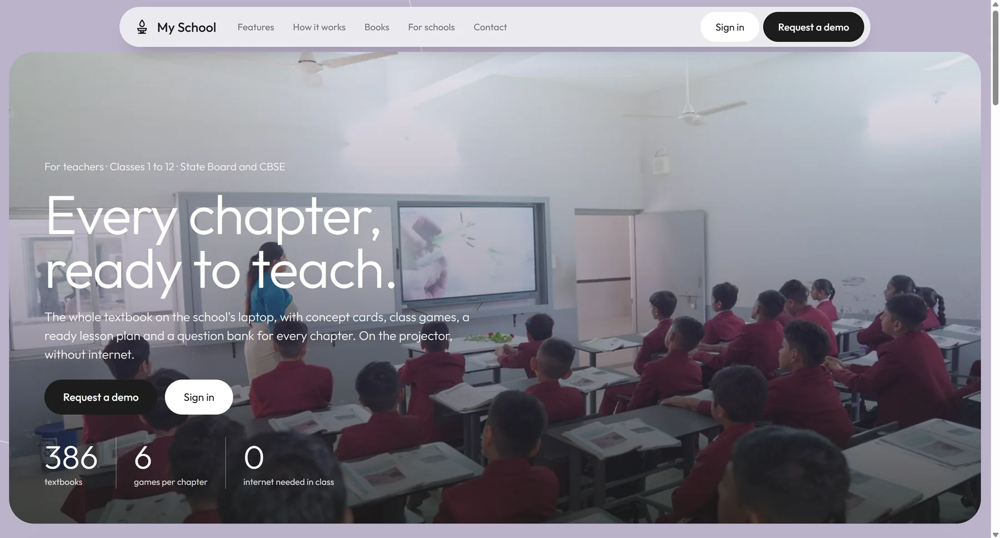
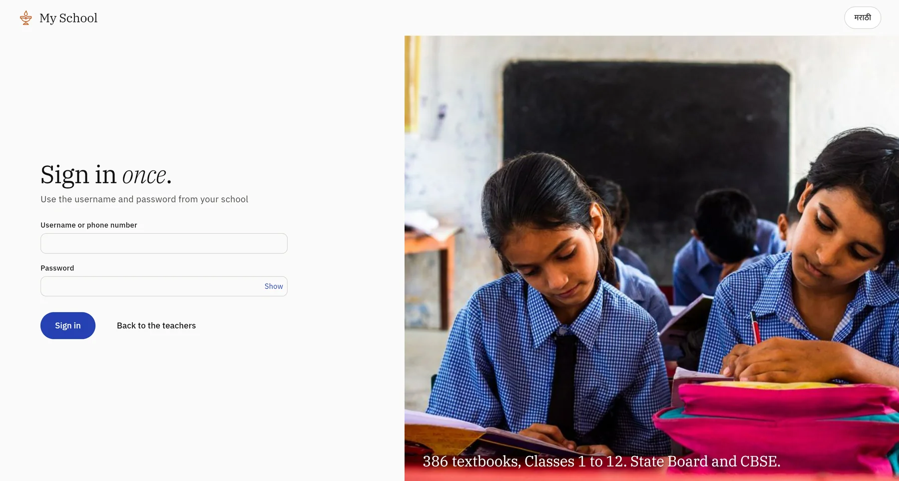
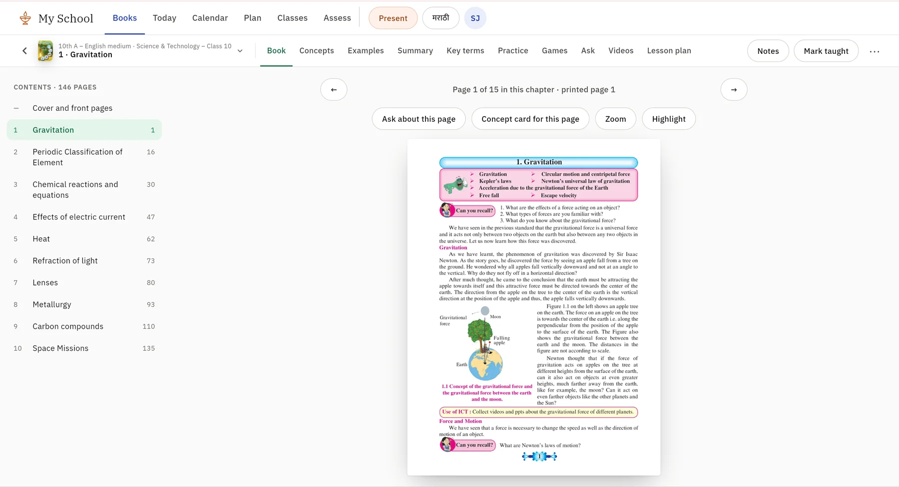
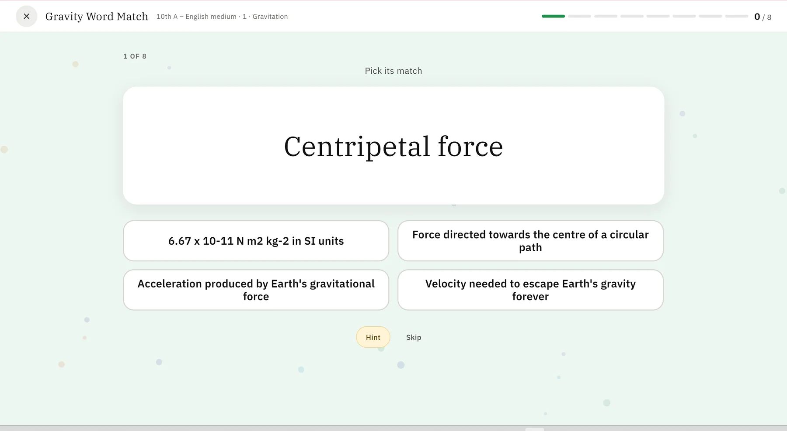

Screenshots




The problem
Teachers in Maharashtra schools (state board and CBSE) prepare every period by hand: reading the chapter, making notes or slides, writing questions, finding videos. Most classrooms have a projector but unreliable or no internet, so cloud-AI teaching tools don't work in class. Students are minors, so student accounts, ads and tracking were off the table from the start.
The product
Teacher-first: the teacher signs in, picks the class, opens the chapter, and teaches from the laptop on the projector. Students don't log in. Every chapter has:
- Book. The actual pages, uncropped, with figures extracted.
- Concept cards. Each idea in 3–5 numbered steps in the book's own words, a "try at home" activity, an "ask the class" question, and source pages.
- Games. Match pairs, sort into groups, true/false, odd one out, label the picture, unscramble — a hint per question and the reason plus page after every answer.
- Lesson plan. Already written and split into periods (objectives, hook, steps, activity, check, homework), with items to tick off and print.
- Question bank. 20–40 questions per chapter (MCQ, short, true/false, fill-in) with difficulty, answer, explanation and source page.
- Ask the book. Type a question in English or Marathi and get the answer, the paragraph and the page it comes from — fully offline.
- Videos. 1,001 curated YouTube videos across 611 chapters and 135 books, reviewed twice and safety-filtered; only video IDs are stored, and they play online when available.
- School work. A timeline, calendar, attendance, homework, marks and principal summaries, syncing when a connection is available.
Architecture — generate once, study anywhere
Everything AI-related happens once, at build time, on my own machine while online. The device app itself makes no AI or API calls and needs no internet in class: a PDF-to-text-and-OCR pipeline extracts chapters and chunks, an LLM generates cards, Q&A, games and lesson plans against strict JSON schemas with validators, and the result — including embeddings and curated videos — is packaged into a signed, per-book SQLite content pack. The Flutter app on the school laptop reads that pack through a local SQLite database with full-text and vector search built in, syncing to a FastAPI backend only when a connection happens to be available. Every feature works in flight mode once a pack is on the device, every answer is traceable to a chunk, chapter and page, no student data is collected, and both languages are supported everywhere.
Tech stack
| App | Flutter (Dart 3), Riverpod, go_router, drift + SQLite (FTS5), ARB localisation (English/Marathi), golden-image tests; Android, Windows, Web, iOS-safe |
|---|---|
| Backend | Python FastAPI, async SQLAlchemy (SQLite in the demo, Postgres-ready), JWT auth with argon2, idempotent offline-first sync |
| Content pipeline | Python 3.12, PyMuPDF, Tesseract OCR (English and Marathi), chapter and chunk detection, JSON-schema-validated LLM generation, ONNX embeddings, YouTube Data API search with a review step |
| Search/AI | SQLite FTS5 (unicode61 and trigram) fused with multilingual-e5-small embeddings via reciprocal-rank fusion; Gemma 3 270M as a constrained formatter on CPU; Claude for generation, backed by a pool of free-tier providers for bulk jobs |
| Infrastructure | Sandboxed on a shared VPS that already hosted two live client sites — its own disk image, user and systemd CPU quota, localhost-only ports, Cloudflare tunnel — with a before/after integrity check on every deploy so the demo could never touch the production sites |
Search and AI, in detail
Plain keyword search failed on how teachers actually ask a question ("liquid part of blood", "why doesn't air pressure squash us") and on Marathi morphology, and it would confidently return a wrong answer for an off-topic question. The fix, built entirely offline into each content pack: two text indexes per book (an exact/stemmed FTS5 index and a trigram index for partial Devanagari matches), plus every question-answer pair and chunk embedded with multilingual-e5-small and baked into the pack as vectors. A query's keyword and vector candidates are fused with reciprocal-rank fusion, boosted slightly toward the current chapter, and gated: an answer is only shown if retrieval is confident, and a separate off-topic gate falls back to "closest book text" instead of inventing an answer when it isn't. I evaluated this on a hand-judged bench of 104 on-topic and 80 off-topic questions across two books, tuning on a dev split and checking on a held-out test split — off-topic false answers went to zero on the test split once the gates were in place.
For the "Ask the book" feature's final wording, a small Gemma 3 270M model runs on CPU as a strictly constrained formatter: retrieval decides the facts and supplies the exact sentences, and the model is only allowed to choose an opening line and a layout — every body line must be an exact, verbatim sentence from the retrieved answer, and a grounding guard rejects any response that adds a word or number it wasn't given. On a bench of real questions, 69% of English answers were successfully reframed this way with zero hallucinated facts by construction; Marathi framing was weak at this model size and is disabled by configuration rather than shipped half-working.
Measured honestly: on 52 natural English questions, the first answer returned is fully right about 58% of the time, partially right about 17%, and wrong about 25%. The limiting factor is question-answer coverage, not the ranking method — not every way a teacher might phrase a question has a pre-written answer yet, which I've scoped as the next content job rather than a search-quality problem.
Outcomes
Measured. All 386 textbooks (Maharashtra State Board, English/Marathi/Hindi medium, plus NCERT for CBSE, Classes 1–12) were generated, validated, packaged and published to a demo server, and every study feature runs with the network switched off. All generation happened once, at build time, instead of a cloud model call per question per student in class. The content build's paid API spend was capped at under $80 by using batch pricing and a pool of free-tier providers for the remaining volume.
Estimated, not yet measured in a classroom — stated as such. A ready lesson plan, concept cards and a question bank per chapter are designed to replace roughly 30–60 minutes of a teacher's own per-chapter preparation; this is my estimate of the content a teacher would otherwise have to write themselves, not a figure from a field study. The app is designed to run on ordinary Windows laptops and budget Android devices without internet, which matches the typical state-school setup, and collecting no student data avoids the consent overhead that pupil data would otherwise require.
What I learned
- A small model is reliable when it only has to choose between options it's given and is checked before it speaks, rather than being trusted to generate facts itself.
- When the limiting factor is coverage, not retrieval quality, say so plainly rather than tuning the ranking further.
- Sandboxing a demo workload on a shared production server is worth the extra setup — a disk image, a dedicated user and a CPU quota turn "please don't break the other sites" into something enforced rather than hoped for.